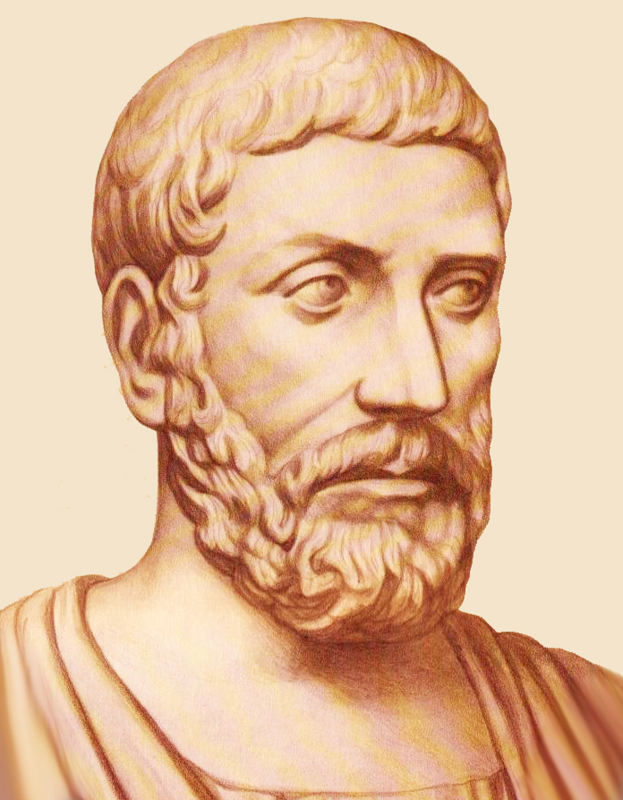
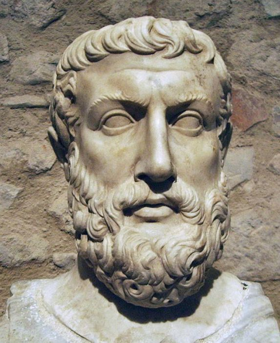
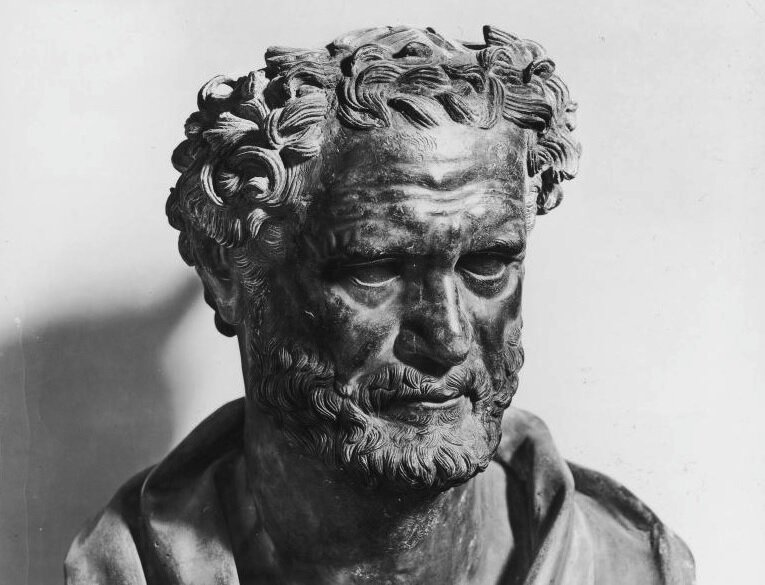
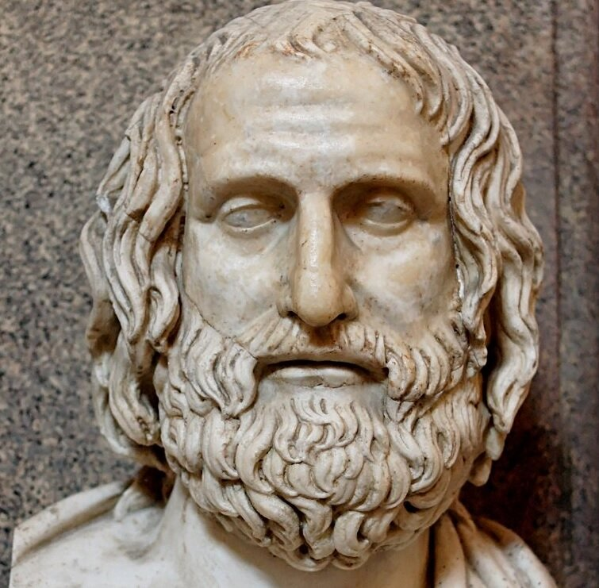
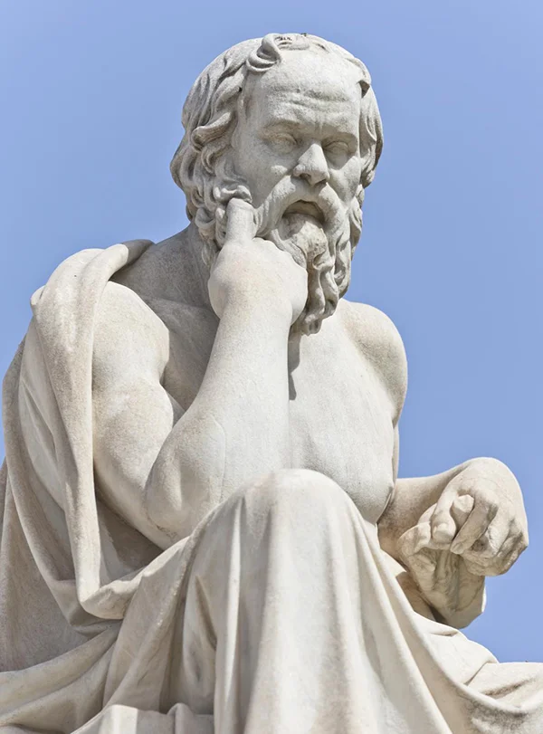
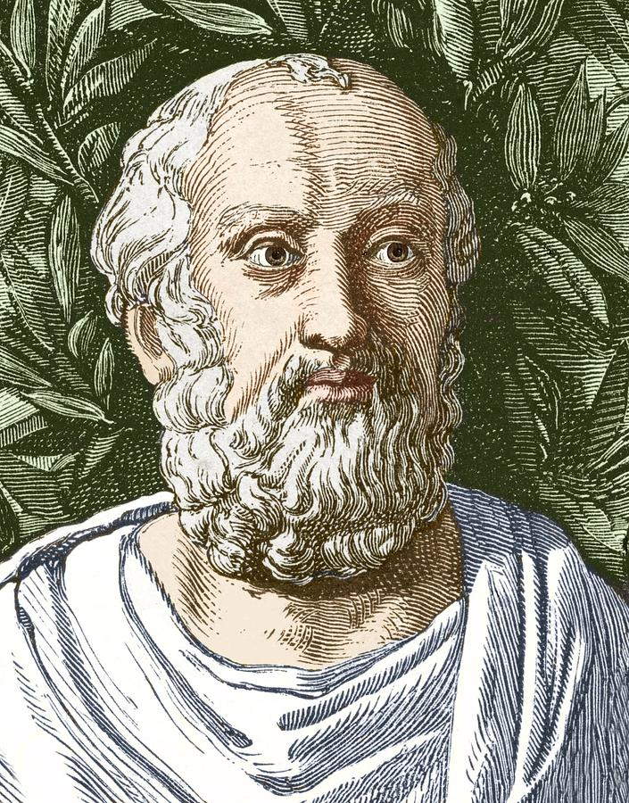
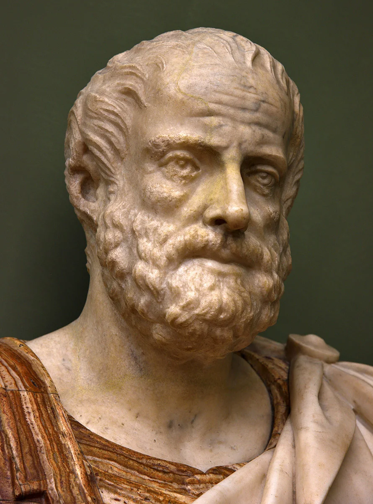

Временные рамки античной философии – с VII – VI вв. до н. э. до III
– V вв. н. э. Понятие "античность" включает в себя также и
пространственные характеристики: средиземноморской ареал античного
мира включает прежде всего Египет, Грецию, Рим
Выдающиеся античные философы известны всем, среди множества имен
отметим следующие:
Пифагор, Парменид, Зенон, Гераклит, Демокрит, Протагор, Сократ,
Платон, Аристотель, Эпикур, Сенека.
Родина философии как самостоятельной и особой сферы духовной
активности – Греция. В ней сложились уникальные социокультурные
условия ее зарождения, позволившие мыслителям древности преодолеть
традиционную мифопоэтическую картину мира и постичь тайны бытия с
помощью разума. Более тысячи лет просуществовала античная традиция
философствования (до закрытия всех греческих философских школ как
языческих по указу императора Византии Юстиниана).
Античное миросозерцание своим центром полагает космос,
сменивший хаос благодаря богам, принесшим в мир логос.
Описывая космос, мы опираемся на понятия гармонии, меры порядка;
греческий космос одушевленный, разумный, чувственно-телесный, живой.
Он, подобно куполу, замкнут; здесь живут боги и люди. Вечные циклы
определяют жизнь космоса: рождение – расцвет – распад – гибель и
снова рождение. В эту эпоху нет акцента на неповторимой
индивидуальности человека, он – "человек-в-космосе"; индивид не
уникален, это микрокосм (целый малый космос), такой же прекрасный,
разумный и живой. В этом смысле столь же космичны леса, пашни,
животные, здания, города, корабли, семьи и все прочее.
Главная проблема ранней философии - попытка выявить универсальные
основания космической целостности и гармонии, первые начала жизни и
ума. Краеугольным вопросом для разрешения этой проблемы становится
формулировка: из чего все (возникло)?
 Самыми простыми и очевидными были предположения о том, что первым
началом космоса является одна из четырех стихий (или элементов)
огонь, земля, воздух, вода. К примеру, Фалес Милетский (624 –
547 гг. до н. э.), – первый древнегреческий философ, утверждал, что
именно вода является первоначалом всего, поскольку из нее все
рождается, все из воды состоит и в нее же (или в ней) разлагается.
Разные философы выдвигали свои схематики мироздания, предполагая
несущим гармоническую космическую целостность первоначалом тот или
иной элемент, а то и разнообразные их комбинации. Позже Эмпедоклом
была высказана мысль о том, что первоначалами являются все четыре
стихии
Самыми простыми и очевидными были предположения о том, что первым
началом космоса является одна из четырех стихий (или элементов)
огонь, земля, воздух, вода. К примеру, Фалес Милетский (624 –
547 гг. до н. э.), – первый древнегреческий философ, утверждал, что
именно вода является первоначалом всего, поскольку из нее все
рождается, все из воды состоит и в нее же (или в ней) разлагается.
Разные философы выдвигали свои схематики мироздания, предполагая
несущим гармоническую космическую целостность первоначалом тот или
иной элемент, а то и разнообразные их комбинации. Позже Эмпедоклом
была высказана мысль о том, что первоначалами являются все четыре
стихии
 Эту традицию продолжил знаменитый диалектик античности
Гераклит Эфесский (544 – 484 гг. до н. э.), одним из первых
осуществивший переход к представлению мира в понятийно-
категориальной форме. Он считал, что "мир, единый из всего, не
создан никем из богов и никем из людей, а был, есть и будет вечно
живым огнем, закономерно воспламеняющимся и закономерно угасающим".
Понятие "логос" в его учении означало мировую закономерность,
утверждающую царящую в жизни природы и социума борьбу
противоположностей, постоянное движение и изменение.
Эту традицию продолжил знаменитый диалектик античности
Гераклит Эфесский (544 – 484 гг. до н. э.), одним из первых
осуществивший переход к представлению мира в понятийно-
категориальной форме. Он считал, что "мир, единый из всего, не
создан никем из богов и никем из людей, а был, есть и будет вечно
живым огнем, закономерно воспламеняющимся и закономерно угасающим".
Понятие "логос" в его учении означало мировую закономерность,
утверждающую царящую в жизни природы и социума борьбу
противоположностей, постоянное движение и изменение.

Другой оригинальный подход к усмотрению первоначал космоса выдвинул
Пифагор (580 – 500 гг. до н. э.). Согласно Пифагору, сотворен
космос на основе (с помощью) числа; к тому же сотворенный
космический миропорядок описывается числами, именно числа выражают
вещи и их соотношения. Пифагору традиция приписывает изобретение
слова "философия", которое дословно означает "любовь (стремление) к
мудрости". Так один из первых древнегреческих философов хотел
выразить отличие свободно умопостигающего и дискутирующего о мире
философа от традиционного всезнайства мудреца.

Парменид из Элеи (ок. 540 – ок. 470 гг. до н. э.), будучи
современником Гераклита, решительно противостоял идеям эфесского
философа. Парменид резко противопоставил истину и мнения: любая вещь
высказывается в самых различных мнениях, но истина всегда одна. Она
открывается не чувствам (они-то и побуждают множество мнений), а
разуму, говорящему: "бытие есть, небытия нет; мыслить – то же, что
быть; бытие неделимо и неподвижно" (поэтому основная категория,
применяемая мыслителем для обозначения бытия, – единое). Сами
рассуждения Парменида, в сравнении с предшествующими ему философами,
выстраиваются на основе доказательства и логической аргументации
истин умозрения, а не просто на сравнениях, метафорах или наглядных
образах. Этот путь ("который истине спутник") приводит к высшей
степени важной идее тождества мышления и бытия. Мышление дает нам
знание истины, ее следует признать, с выводами разума необходимо
считаться, даже если картина мира, рисуемая нашими чувствами
(мнениями), резко противоречит подлинному знанию.
 Противостояние очевидности и умопостигаемой реальности
Зенон Элейский, ученик Парменида, сделал основной темой своих
исследований. И хотя Зенон не явился создателем собственной
оригинальной концепции, однако он изобрел остроумный способ
обоснования философских идей учителя. Это так называемые апории, или
тупиковые ситуации, затруднения, которые возникают в мышлении, если
им признается небытие как существующее, и вследствие такового –
признание движения и делимости бытия. Тем самым Зенон доказывал явно
противоречащие очевидности вещи: он утверждал, что на самом деле
летящая стрела не летит, ибо находится (покоится) в каждый миг
полета в фиксированной точке, и момент движения поэтому неопределим
("Летящая стрела"); что размеренно движущуюся черепаху никогда не
догонит легконогий Ахилл, поскольку всякий раз, когда он достигает
точки, с которой черепаха одновременно с ним начала движение, она
будет проходить какое-то расстояние ("Ахилл и черепаха").
Противостояние очевидности и умопостигаемой реальности
Зенон Элейский, ученик Парменида, сделал основной темой своих
исследований. И хотя Зенон не явился создателем собственной
оригинальной концепции, однако он изобрел остроумный способ
обоснования философских идей учителя. Это так называемые апории, или
тупиковые ситуации, затруднения, которые возникают в мышлении, если
им признается небытие как существующее, и вследствие такового –
признание движения и делимости бытия. Тем самым Зенон доказывал явно
противоречащие очевидности вещи: он утверждал, что на самом деле
летящая стрела не летит, ибо находится (покоится) в каждый миг
полета в фиксированной точке, и момент движения поэтому неопределим
("Летящая стрела"); что размеренно движущуюся черепаху никогда не
догонит легконогий Ахилл, поскольку всякий раз, когда он достигает
точки, с которой черепаха одновременно с ним начала движение, она
будет проходить какое-то расстояние ("Ахилл и черепаха").
В последующем в греческой философии были представлены различные
компромиссные формы спора между элеатами и Гераклитом. Все они
стремились разрешить одну важную проблему: как, в каком смысле можно
признать существование небытия, не впадая при этом в противоречия?
Центральным из такого рода компромиссов стала концепция
атомизма (Левкипп, Демокрит).
Атомистов с элеатами объединяет четкое разделение истины и мнения.
Но, по мнению атомистов, истинно существуют не только атомы (бытие),
но и пустота (небытие). Именно в пустоте (том самом небытии) может
иметь место движение. Атомы и пустота (бытие и небытие) недоступны
чувствам, они постигаются только разумом. "В мнении горькое, в
мнении твердое, в действительности же – лишь атомы и пустота".

Согласно выдающемуся атомисту Демокриту (ок. 460 – ок. 370
гг. до н. э.) основой "миростроя" являются атомы (атом – неделимый),
они – первоначало космоса. Эти мельчайшие неделимые частицы движутся
("мечутся") в пустоте, они вечны и неизменны, а различные сочетания
атомов при соединении образуют многообразие мира вещей. Таким
образом, все различия вещей можно объяснить их особой организацией
(структурой), а сами атомы имеют разные характеристиками (форма, вес
и т. д.). За появлением и исчезновением вещей стоит соединение или
разъединение бесконечного множества вечно движущихся в пустоте
атомов. Материализм Демокрита находит продолжение в его
детерминизме, поскольку в атомарной обустроенности мира все
закономерно, разумно, необходимо и причинно обусловлено; это космос,
а не хаос случайностей.
Онтологическая проблематика (проблема первоначал) главенствовала в
ранней античной философии вплоть до софистов и Сократа. С них
начинается антропологический поворот в древнегреческой философии,
знаменуя собой формирование классической древнегреческой философии.

Протагор – глава античной школы софистов – считал главным в
философии умение рассуждать, доказывать свою позицию, критиковать,
и, тем самым, побеждать в споре. Софисты полагали, что философия –
это мастерство, коим можно овладеть; философии можно обучиться и
научить ей других. Протагор одним из первых стал обучать философии
за деньги, а софисты вошли в историю философии и как платные учителя
мудрости.
Опираясь на энциклопедические знания, логические навыки и уловки
(софизмы), искусство красноречия, софисты считали возможным
опровергать казалось бы непреложные истины и обосновывать
противоречащие здравому смыслу воззрения (парадоксы). Представители
этой школы способствовали развитию интереса к логике и риторике,
умению доказывать и опровергать, пользоваться гибкостью понятий и
многозначностью языка, что позволяло преодолевать противоречия,
неразрешимости, ограничения и запреты. Аргументированно доказать или
опровергнуть – значит уговорить, убедить, победить. Кредо софистов:
убедить можно во всем, что угодно (выгодно, ценно, удобно и пр.),
здесь и сейчас, в конкретной ситуации. Истину человек находит только
в себе самом. Эта идея формулируется Протагором так: человек есть
мера всех вещей (существующих, что они существуют, и несуществующих,
что они не существуют).

Сократ (ок. 470 – 399 гг. до н. э.), как и Протагор, считал
философию неразрывно связанной с жизнью человека, его потребностями
и интересами. Он осознавал, что вопрос об основах космической
гармонии не первенствует в умах людей; интерес философа обращается к
тому, как и чем живут люди – политики, ремесленники, художники и т.
д., поэтому главными проблемами размышлений становятся смысл
человеческой жизни и смерти, человеческое предназначение, мужество,
справедливость, и другие нравственные добродетели. Сократ выступил с
резкой критикой софистов; его не устраивала софистическая трактовка
философии и понимание истины. Афинский мыслитель полагал, что
философия не должна зависеть от мнений разных людей, ее задача –
поиск истины, которая, как и другие ценности человечества (благо,
красота, умеренность) имеет всеобщий и универсальный характер.
Его философия носит рационально-этический характер, часто понятия
блага и мудрости отождествляются: злой нрав человека обусловлен его
незнанием истин добра. Абсолютные и единые для всех истины
открываются людям, освоившим такого рода диалог, в котором
собеседники выражают противоположные мнения и преодолевают
противоречия в собственных и чужих рассуждениях. В споре рождается
истина – так утверждал Сократ, диалектика для него была искусством
ведения спора. Со временем многие афинских граждане отвернулись от
Сократа, испуганные и возмущенные его нелицеприятными попытками
исследовать нравы людей и выносить их на публичное обсуждение в
споре. Против него было выдвинуто надуманное обвинение в оскорблении
богов и развращении юношества. Суд афинян приговорил Сократа к
смерти. Сократ принял яд цикуты, отказавшись от подготовленного
учениками побега: он считал гражданским долгом следовать законам
всегда, если даже они приговаривают к смерти
Принципиально новая мыслительная стилистика, новый способ
философствования Сократа, как отмечал А. Ф. Лосев, никогда не
оставляли человека в покое, всегда побуждали спорить, подвергать
сомнению, взрывать устоявшиеся представления. Тем самым Сократ
утверждал незавершенный характер истины, открываемой мыслящим
человеком в самом рассуждении.

Платон (427 – 347 гг. до н. э.) продолжает диалектическую
традицию, заложенную его учителем Сократом, свои воззрения он
излагает в форме диалогов, непременным и главным участников которых
становится сам Сократ.
Юный Платон тяжело пережил смерть Сократа. Она зародила сомнения в
прекрасном и разумном, гармоничном и совершенном мировом порядке, в
котором смерти предают законопослушного и мудрого Сократа. Платон
выстраивает отличную от сократовской мировую схематику, согласно
которой в нашем мире нет гармонии и совершенства, но вот за
небесными сферами пребывает мир иной, действительный, абсолютный и
прекрасный мир идей (эйдосов). Каждая вещь определена своей идеей в
запредельном космосу мире, причастна идее (так, есть идеи чаши и
стола, идеи человека и лошади, идеи любви и красоты). Земные
предметы, несовершенные, рождающиеся и умирающие в своей
материальности являются лишь тусклым отблеском, отражением, тенью
мира идей. Как телесное существо, человек несовершенен и смертен, но
ему дарована бессмертная душа, определяющая человеческое
существование. Душа может путешествовать в поднебесье, созерцая и
восторгаясь миром идей. Сам процесс познания как обретения истины,
согласно Платону, – это припоминание душой когда-то уже созерцаемых
ею идей. Таким образом, для афинского мыслителя подлинным бытием
обладает мир идей, вечный мир духовных сущностей.
Особое место в философии Платона принадлежит учению о совершенном
(идеальном) государстве. Всех людей он разделил, согласно
преобладающей у них части души (разумной, эмоциональной /
аффективной и чувственной / вожделеющей), на три типа: мудрецов
/ философов, воинов / стражей и крестьян и ремесленников. Каждая
группа имеет свойственные только ей добродетели и обязанности, а
объединяющей совершенное и справедливое государство общей
добродетелью является мера. Счастливый человек должен быть
причастным идее счастья; по Платону, такой человек мужествен и
справедлив, красив и здоров, славен делами, обеспечен и удачлив, у
него есть друзья, отечество его процветает.

Ученик Платона – Аристотель (384 – 322 гг. до н. э.) –
выступил с критикой объективного идеализма учителя. Платон был
неправ, приписывая самостоятельное существование идеям, отделяя их
от мира вещей и чувств: невозможно, чтобы врозь находились сущность
и то, чего она есть сущность.1 Всякая вещь представляет собой
единство материи и формы: материя – это то, из чего состоят вещи,
первичный косный материал, возможность вещей; форма – это то, что
актуализирует материю, обеспечивая ее переход из возможности в
действительность, это активное начало жизни и деятельности. Душа, в
отличие от представлений Платона, не вечна, она присуща любому
живому существу, а человеческая душа разумна. Жизнь разума
неразрывна с нравственной позицией, поэтому главные человеческие
добродетели – благоразумие, великодушие, благожелательность,
храбрость и щедрость. В своих этических рассуждениях Аристотель
советует стремиться к самоограничению и усмотрению средней линии
поведения: принадлежность добродетели – середина. Вершиной
добродетелей является справедливость, идея справедливого государства
очень важна для Аристотеля.
Социально-философская проблематика Аристотеля базируется, как и у
Платона, на признании изначального социального и природного
неравенства людей, на необходимом стремлении к справедливому
государству, в основе которого лежат соблюдаемые человеком и
совершенствующие его законы. Сам человек – политическое
(общественное) животное, он предназначен жить сообща, только в
сообществе способен интеллектуально воспитываться и нравственно
развиваться.
Аристотель заслуженно вошел в историю мировой культуры как
энциклопедический ум античности, он создал множество произведений по
философии, естествознанию, логике и риторике, этике и эстетике,
экономике, политологии, благодаря его обширным историко-философским
сочинениям нам становятся доступными рождение древнегреческой
философской мысли и проблематика споров интеллектуалов той поры.
Учение Аристотеля завершает период классики в развитии античной
философии, представившей славную классическую триаду греческих
философов (Сократ, Платон, Аристотель), создавших канонические
традиция философствования, краеугольным камнем которых, тем не
менее, становится обязательное творческое и критическое
переосмысление идей учителя.
Распад империи Александра Македонского (ученика Аристотеля)
знаменует наступление новой эпохи – эпохи эллинизма, в том числе,
позже, римского эллинизма (с I в. до н. э. по V в. н. э.), основные
философские направления которого – скептицизм, эпикуреизм, стоицизм
и неоплатонизм. Эти основные направления эллинистической философии
явились отражением и выражением духовных поисков эпох распада
империй, они задавались, по преимуществу, этическими вопросами смысла
жизни и счастья. Специфическая черта эллинистической философии – ее
максимально практическая, морально и жизненно утилитарная
пессимистическая и индивидуалистическая ориентация.
Эпикурейская философия продолжает развивать
материалистическую демокритовскую атомистику, утверждая
объективную реальность автономных атомов, движущихся в пустоте.
Эпикур (341 – 270 гг. до н. э.), а затем и римский эпикуреец Тит
Лукреций Кар (ок. 99 до н. э. – 55 до н. э.) отказывают человеку в
социальной активности, возможности развивать мир по собственным
замыслам. Конкретный человек как отдельный атом интереснее
общественного целого, индивидуальная этика выше социальной,
общественная солидарность – не цель, а средство личного спокойствия и
благоденствия. Налицо отказ от этики социальной активности и
законосообразной справедливости Платона и Аристотеля.
Человек – существо природное, телесное, чувственное. Боги, судьба
или смерть не мешают человеку наслаждаться жизнью. Эпикур утверждал,
что для живых смерти нет («смерть для нас ничто: ведь всѐ и хорошее и
дурное заключается в ощущении, а смерть есть лишение ощущений»).
Наслаждение, согласно эпикурейцам, дано в движении (удовольствие и
радость) или в покое (безболезненность и безмятежность); совет один:
«незаметно живи». Человек может быть счастливым и наслаждаться
жизнью, если не истратит себя в бесполезной и обреченной погоне за
властью или богатством.
Стоики (Клеанф, Сенека, Марк Аврелий) понимали философию как
жизненную мудрость. Природа (рок, судьба) – это причинная цепь всего
сущего, изменить которое невозможно. Достоинство мудреца состоит в
свободе как единстве природного и разумного, в способности уловить
движение судьбы и согласовать свою жизнь с закономерной логикой мира.
Перечить судьбе бесполезно и опасно; того, что будет, – не избежать,
поэтому нужно, как советовал Сенека, просто осмысленно жить, относясь
спокойно и равнодушно ко всему. Печален лейтмотив стоицизма: даже
разумный человек беспомощен перед безликой судьбой, его счастье – в
мудром («стоическом») отказе от чувственных удовольствий, личных
амбиций, от всего лишнего, несоразмерного судьбе.
Скептики (Пиррон, Агриппа, Секст Эмпирик) выражали тотальное
сомнение в действительной возможности достижения истинного знания.
Выявляя противоречия в отдельных положениях разнообразных
философских школ и систем, сопоставляя их с фактами повседневной
практической жизни, скептики показывали, как сильно подвержен
познающий человек господствующим мнениям, иллюзиям, авторитетам и
предписаниям, насколько преходяща грань между истиной и ложью.
Эпикурейцы, стоики и скептики были страстно вовлечены в
теоретическое противостояние, они уничтожающе критиковали
соперников, но имели, однако, общую линию развития, единый для всех
предмет анализа – отдельного человека, индивидуальную человеческую
жизнь, целью которой было, по их усмотрению, счастливое и спокойное
благоденствие личности; своей задачей все они считали определение
возможностей реализации этой цели (для каждой философской школы эти
условия и способы достижения были принципиально различны).
Неоплатонизм (последователи Платона) – другая школа
эллинистической философии, которая была основана Плотином (202–270
гг. до н. э.), а ее завершителем и систематизатором стал Прокл (410–485
гг. н. э.). Неоплатоники, отвечая в условиях кризиса, охватившего всю
жизнь Рима от идеологии до хозяйства, на духовные запросы
просвещенных сограждан, предприняли попытку восстановления единства
мира и человека в космосе, сплавив своеобразным образом мистическую
философию и логику. В основе мира лежит триада: это совершенный
абсолют – Единое, а также истекаюшие из него Ум и Душа. Материя
представляет собой косную и аморфную субстанцию (если точнее – зло),
гасящую исходящие от Единого через Душу и Ум духовные импульсы.
Человеческая душа может и должна через состояние экстаза
воссоединиться с Единым. Неоплатоническая философия не представляла
Единое как Бога-личность, в отличие от христианства, однако не отрицала
существования низших демонов и богов. По сути, неоплатонизм
обеспечил возможность перехода от древнегреческой /древнеримской
философии к средневековой, он завершил идеалистические искания
античности и послужил важным звеном в становлении христианскотеологической философии Средних веков.
В античной философии складываются представления о гармоничном
порядке, естественной целостности отношений в космосе. Человек также
гармоничен, он, постигая мир, укрепляет и поддерживает его гармонию.
Одни философы (софисты) усматривают источник гармонии в самом
человеке, другие (платоники) находят истоки гармонии в мире идей,
запредельном космосу. Если стоицизм провозгласил всемогущую судьбу
определяющей силой взаимоотношений мира и человека, то эпикуреизм
предоставляет человеку возможность достижения счастья в мире, несмотря
на смерть, судьбу и указания богов.
Можно выделить следующие эвристически-содержательные моменты
в проблематике античной философии, заложившей классические начала
новой рационально-теоретической формы духовной активности
человечества:
1. Древние греки, создав философию, изобрели особый и определенный
тип мышления:
а) понятийно-категориальный (абстрактно-теоретический);
б) системно-организованный (структурированный в учениях и теориях с
помощью логических законов);
в) методологический (раскрывающего свои возможности на основе
средств, методов, подходов, дающих устойчивость и направленность в
получении нового знания);
г) прагматически ориентированный, направленный на рациональноэффективную организацию и реализацию человеческой
жизнедеятельности;
д) критический (постоянно обращенный на самого себя, нацеленный на
преобразование и переосмысление).
2. Философия обрела форму метафизики:
а) как метафилософия, обнаруживающая и изучающая «первые причины»
и «первоначала» (Аристотель);
б) как учение о сверхчувственных основах бытия и познания, лежащих за
гранью опыта;
в) как умопостижение подлинного и истинного бытия.
3. Как социальный феномен философия породила особую
организационную форму своего существования в виде школ, т.е.
сообществ философов-профессионалов, занятых разработкой философской
проблематики и воспитанием учеников. В своем более чем тысячелетнем
развитии античная философия предстает совокупностью многообразных
идейно-теоретических течений, уникальным культурным явлением, одной
из основных форм духовной жизни общества той эпохи.
4. Философия обозначила себя и как идеология, как учение об идеях,
определяющих духовную жизнь социума, их природе и роли. Она не
только теоретически обосновывает ценные и значимые способы и формы
человеческого сосуществования, но и является попыткой реализации мира
должного в самосознании человечества.
5. Античные философы продемонстрировали не только оригинальный
образ мыследеятельности, но и особый образ жизни, который становится
определяющим для определенных групп людей, избирающих
теоретические, нравственно-этические и художественно-эстетические
формы духовной активности в качестве главного содержания своей жизни.